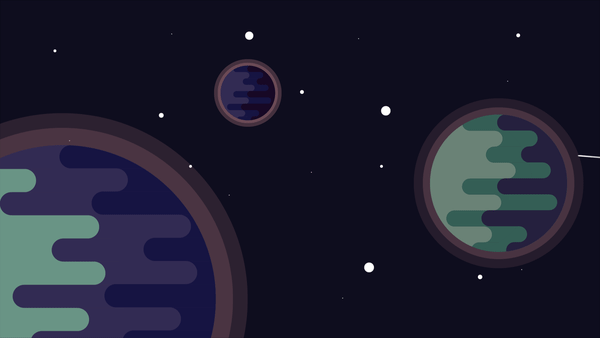

APOD
É uma API da NASA, que busca dados do sita da APOD (Astronomy Picture of the Day) a partir de uma data selecionada, retorna uma imagem ou video relacionado a data, junto de uma descrição escrita por um astrônomo profissional. Selecione abaixo uma data para a visualização.
